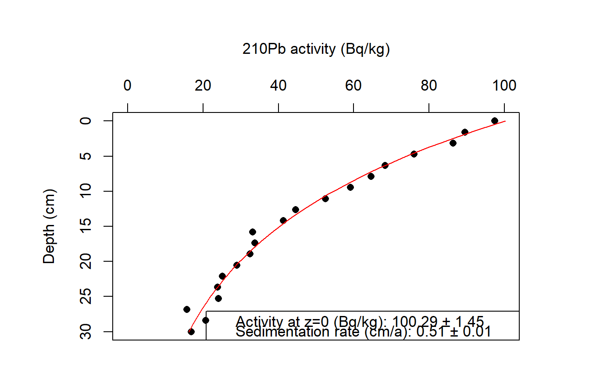

R/calc_SedimentationRate.R
calc_SedimentationRate.RdThis function fits a "Constant Flux Constant Sedimentation Rate" (CF:CS) model to 210Pb activity data from different soil depths to estimate the sedimentation rate of the profile.
calc_SedimentationRate(x, reverse = TRUE, fix_a0 = FALSE, verbose = TRUE, ...)
| x |
| depth (cm )| activity (Bq/kg) |
| [ ,1] | [ ,2] |
|------------|------------------|
[1, ]| ~~~~ | ~~~~ |
[2, ]| ~~~~ | ~~~~ |
... | ... | ... |
[x, ]| ~~~~ | ~~~~ |
|
|---|---|
| reverse |
|
| fix_a0 |
|
| verbose |
|
| ... | Futher arguments passed to |
A list with the following structure:
| Element | Data type | |
| Description | $summary | |
data.frame | ||
| summary table of important model results | ||
$data | ||
data.frame | original input data | |
$model | ||
nls | ||
| model output generated by | minpack.lm::nlsLM |
Model
$$ y = a0 * exp((l/s) * x) $$
y = 210Pb activity at depth x (cm)
a0 = 210Pb activity at depth x=0
l = 210Pb decay constant (= 0.03114 a-1)
s = sedimentation rate (cm/a)
x = depth below surface (cm)
Szmytkiewicz, A., Zalewska, T., 2014. Sediment deposition and accumulation rates determined by sediment trap and 210Pb isotope methods in the Outer Puck Bay (Baltic Sea). Oceanologia 56(1), 85-106.
# Load example data (synthetic) data(Pb) # Apply the model results <- calc_SedimentationRate(x = Pb, reverse = TRUE, fix_a0 = FALSE, verbose = TRUE)#>#>#>#>